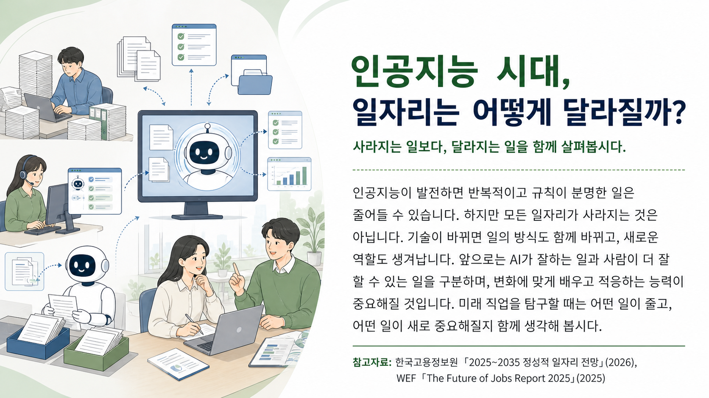
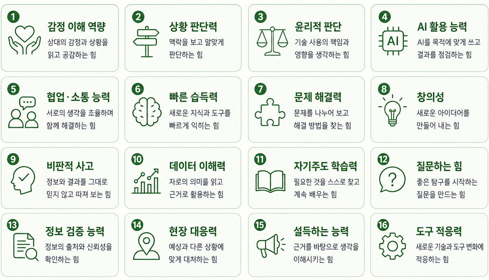
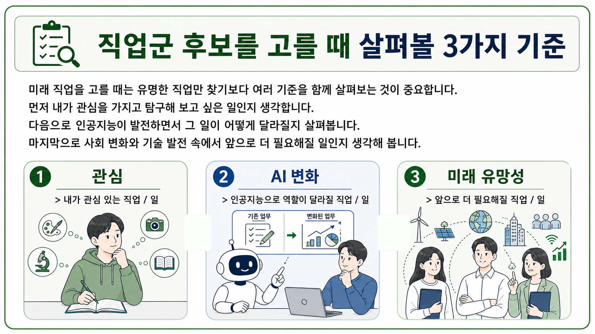

개인 생각을 모둠 안에서 공유하고,
이어지는 조사 활동의 탐구 주제를 한 문장으로 정리합니다.

| 생각 기준 | 직업명보다 일의 변화에 집중합니다. 직업이 완전히 사라지는지보다, 그 직업 안에서 어떤 일이 줄어들고 어떤 일이 새로 생기는지 살펴봅니다. |
|---|---|
| 모둠 공유 방법 | 비슷한 후보를 묶어 탐구 주제로 발전시킵니다. 개인별로 적은 직업 후보를 말하고, 비슷한 직업이나 비슷한 변화끼리 묶어 봅니다. |
예시 키워드를 살펴보고, 우리 모둠이 가장 중요하다고 생각하는 역량과 이유를 정리합니다.

내가 조사하고 싶은 직업군이나 일을 먼저 정리한 뒤, 모둠 탐구 주제로 연결합니다.

| 번호 | 직업군 / 일 | 이유 |
|---|---|---|
| 1 | ||
| 2 | ||
| 3 | ||
| 4 | ||
| 5 | ||
| 6 |